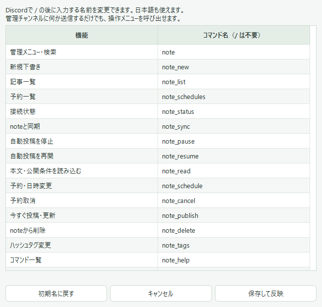

詳細説明書の目次
Discordの操作とコマンド
記事画面、長文・画像添付、検索、操作履歴、メニューの有効期限
2.0.0-rc2対応 · 2026年11月26日更新
記事一覧・検索・予約一覧
一覧は1ページ15件です。「記事検索」で検索語を入れ、「検索を解除」で元へ戻せます。「すべて」「下書き」「公開済み」「予約」で種類を切り替え、「前へ」「次へ」で移動します。
一覧のタイトルを押すと、その記事の本文と操作ボタンが開きます。未取得なら「本文取得中」の後に表示します。本文が長い場合はarticle.txtも確認してください。
「予約一覧」は予約されている記事を探す入口です。予定を見た後に変更したい場合は、その記事を開いて「予約・日時変更」を使います。
新規下書き・長文・画像添付
「新規下書き」でタイトル・本文・ハッシュタグを入力し送信します。タイトルは200文字、本文の入力欄は4000文字、タグ欄は1000文字までです。タグは任意ですが、タイトルと本文は必要です。
より長い本文は/note_newのtextにUTF-8の.txtを添付します。imageに画像を添付すると見出し画像として扱います。本文内の画像・装飾・有料エリアは、作成後にnoteの編集画面で設定します。
送信直後の「受付」は保存完了ではありません。結果を確認してnoteへの保存が終わった記事から予約してください。
記事画面の操作
| ボタン | 操作 |
|---|
| 予約・日時変更 | カレンダーから未来の日時を選んで予約 |
| 内容・公開条件を読み直す | noteの最新の本文・公開条件を取得 |
| タグ設定 | この記事のハッシュタグを変更 |
| 予約取消 | PC側の投稿予定を解除し、記事は残す |
| 今すぐ投稿・更新 | 公開条件を確認して新規公開・更新を実行 |
| noteから削除 | 対象を確認してnoteの記事自体を削除 |
「noteで編集」のリンク先は通常のnote画面です。下書きとして残すならnoteの下書き保存を使い、Discordへ戻って内容を読み直します。編集・公開・削除の詳しい説明を参照してください。
受付・処理結果・操作履歴の読み方
受付はPCへ操作要求が登録されたこと、完了は結果が確認できたことです。記事名・処理内容・結果・受付番号を確認します。公開操作では公開URLも確認します。
メニューの「操作履歴」では手動操作の記録を1ページ5件ずつ確認できます。前後のページへ移っても記録は消えません。自動の定期同期はこの一覧から除かれます。記事個別のPCの「履歴」と、Discordの全操作の履歴は表示対象が異なります。
「HTTPException」などで通知だけ失敗した可能性があるときは、note側の結果も確認します。結果が不明なまま投稿・削除を繰り返す操作は避けてください。
スラッシュコマンドの名前を変更する

PCの「コマンド名の設定」。左が機能、右がDiscordで使うコマンド名です。（押すと拡大）- PCの「Discord・セットアップ」→「コマンド名の設定」を開きます。
- 変更する名前を入力します。使えるのは小文字英数字・日本語・ハイフン・下線の1〜32文字です。
- 同じ名前を複数の機能へ付けず、「保存して反映」を押します。
- 接続中なら再接続後、停止中なら次回接続時にDiscordへ反映されます。
「初期名に戻す」で入力を標準名へ戻せます。変更後の名前は「コマンド一覧」にも表示されます。標準名はコマンド一覧で調べられます。
接続状態・自動投稿の停止／再開
「接続状態」ではDiscordの接続、noteの接続確認、自動投稿の停止／動作中、最終同期と全件取得の確認状態を表示します。
「自動投稿 停止／再開」は投稿スケジューラーを切り替えます。Discordを切断する操作ではありません。実行中の1件がある場合は結果確認まで進むため、「停止」を押した直後にすべての処理が消えるとは限りません。
PC停止・スリープ・アプリ完全終了中は、Discordの画面が残っていてもPCは応答しません。応答がないときの確認順を使ってください。